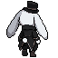
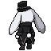
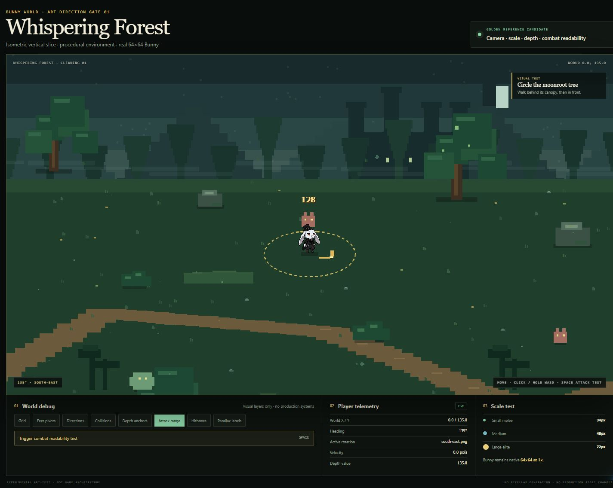

Source rotations → vertical-slice render
Native 64×64 assets

north-east
south-east
south-west

north-west
Displayed at 2× only for inspection; implementation uses native 1×.
Whispering Forest review frame
